SIMBOLI UNIONE EUROPEA
La bandiera dell'Unione rappresenta un cerchio di dodici stelle dorate su sfondo blu;
l'inno dell'Unione è tratto dall'Inno alla gioia della Nona sinfonia di Ludwig van Beethoven;
il motto dell'Unione è: "Unita nella diversità", in latino "In varietate concordia";
la moneta dell'Unione è l'euro;
la festa dell'Europa è celebrata il 9 maggio in tutta l'Unione
Alla nascita dell'Unione Europea si è deciso di adottare dei simboli comuni che identifichino la comunità europea e l'Europa come entità politica. Infatti, come riportato nell'articolo I-8 del Trattato intitolato "I simboli dell'Unione", i simboli sono la bandiera, l'inno, la moneta, il motto e la festa.
Bandiera
Storia
La bandiera dell'Europa raffigura dodici stelle dorate a cinque punte disposte in cerchio su sfondo blu; le stelle sono orientate con una punta verso l'alto.
Il colore blu è il colore del mare, del cielo, dell'aria e rappresenta l'ideale di libertà, fratellanza e perfezione.
Il numero delle stelle non coincide con il numero degli stati membri, ma è un numero simbolico.
Richiama l'immagine della Madonna propria del dodicesimo capitolo dell'Apocalisse: "Nel cielo apparve poi un segno grandioso: una Donna vestita di sole con la luna sotto i suoi piedi e sul suo capo una corona di dodici stelle". Di tale riferimento non c'è però traccia nei documenti originali.
Il Consiglio d'Europa si occupò della scelta della bandiera dal 1950 al 1955. Nel 1983 il Parlamento europeo adottò la bandiera creata dal Consiglio e venne introdotta dall'inizio del 1986.
Qual è la bandiera giusta?
Descrizione
«Sullo sfondo blu del cielo, una corona di dodici stelle dorate rappresenta l'unione dei popoli europei.
L'emblema è costituito da una bandiera blu di forma rettangolare, la cui base (il battente della bandiera) ha una lunghezza pari a una volta e mezza quella dell'altezza (il ghindante della bandiera).
Dodici stelle dorate sono allineate ad intervalli regolari lungo un cerchio ideale il cui centro è situato nel punto d'incontro delle diagonali del rettangolo. Il raggio del cerchio è pari a un terzo dell'altezza del ghindante. Ogni stella ha cinque punte ed è iscritta a sua volta in un cerchio ideale, il cui raggio è pari a 1/18 dell'altezza del ghindante. Tutte le stelle sono disposte verticalmente, cioè con una punta rivolta verso l'alto e due punte appoggiate direttamente su una linea retta immaginaria perpendicolare all'asta. Le stelle sono disposte come le ore sul quadrante di un orologio. Il loro numero è invariabile ed è simbolo di perfezione ed unità»
Inno
Storia
l'inno europeo è composto da una melodia tratta dalla nona sinfonia di Beethoven composta nel 1823 per mettere in musica l'"inno alla gioia" scritto da Friedrich von Schiller nel 1785.
L'inno ufficiale adottato dal Consiglio d'Europa nel 1897 e poi nel 1885 dai capi di stato e di governo dei paesi membri, è privo di testo ed è costituito solo dalla musica perchè non esiste una lingua unica per tutti gli stati membri.
L' inno esprime gli ideali di libertà, pace e solidarietà
Ascoltiamolo
Clicca per sentire l'inno
L'inno è eseguito dall'Orchestra giovanile di fiati dell'Unione europea, diretta da André Reichling. L'esecuzione è stata registrata nel 1994 al Teatro da Trindade di Lisbona. L'arrangiamento musicale è di Herbert von Karajan.
Moneta
Banconote
Il simbolo grafico dell'euro, il glifo, si ispira alla lettera dell'alfabeto greco "epsilon" e si riferisce alla iniziale della parola Europa.
Le linee parallele indicano la stabilità della moneta. Si è pensato di divedere la moneta in cartacea e metallica, 8 monete e 7 banconote.
Ogni banconota raffigura sul fronte un arco, mentre sul retro un ponte appartenente a un determinato periodo storico, e ogni banconota presenta elementi architettonici di un periodo diverso, a partire dall'architettura romana fino a quella moderna.
Osserviamole
| VALORE | IMMAGINE FRONTE | IMMAGINE RETRO | COLORE | PERIODO |
|---|---|---|---|---|
| 5 € | 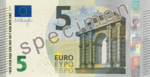 | 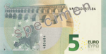 | Grigio | Architettura romana |
| 10 € | 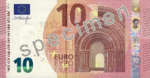 | 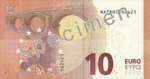 | Rosso | Architettura romanica |
| 20 € | 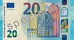 | 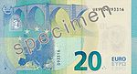 | Blu | Architettura gotica |
| 50 € |  | 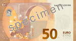 | Arancione | Architettura rinascimentale |
| 100 € | 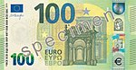 | 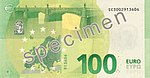 | Verde | Architettura barocco e rococò |
| 200 € |  | Ocra | Architettura Art Nouveau | |
| 500 € | 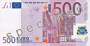 | 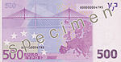 | Viola | Architettura moderna |
Monete
Per le monete, invece, è stato stabilito che sul retro ogni stato rappresenti dei propri simboli, mentre sul fronte sei simboli comuni.
| VALORE | FRONTE | RETRO (solo in Italia) | RAPPRESENTAZIONE RETRO | MATERIALE |
|---|---|---|---|---|
| 1 cent | 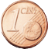 | 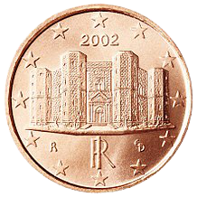 | Castel del Monte | Acciaio rivestito da rame |
| 2 cent | 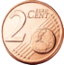 | 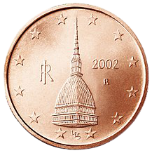 | Mole Antonelliana | Acciaio rivestito da rame |
| 5 cent | 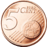 | 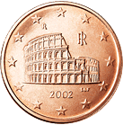 | Colosseo | Acciaio rivestito da rame |
| 10 cent | 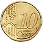 | 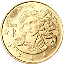 | Venere di Botticelli | Oro nordico |
| 20 cent | 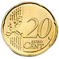 | 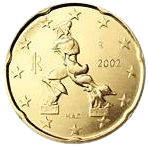 | Forme uniche della continuità nello spazio Boccioni | Oro nordico |
| 50 cent | 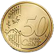 | 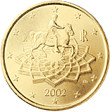 | Statua equestre di Marco Aurelio Piazza del Campidoglio | Oro nordico |
| 1 € | 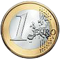 | 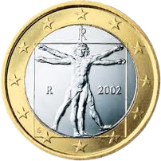 | Uomo vitruviano | Nichel e ottone, rame e nichel |
| 2 € | 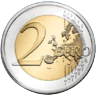 | 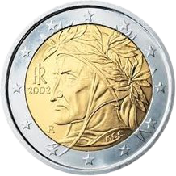 | Ritratto di Dante | Nichel e ottone, rame e nichel |
Motto e Festa
Motto
Il motto è "uniti nella diversità", che ne riprende uno di Ernesto Teodoro Moneta, "in veritate unitas!", e significa che, nonostante le diversità dei vari popoli, è fondamentale l'unione tra essi.
Puoi osservarne le varie traduzioni premendo il pulsante in cima alla pagina
Festa
La festa dell'Unione Europea è il 9 maggio, giorno in cui,nel 1950, Robert Schuman, politico francese ritenuto uno dei padri fondatori dell'Unione, presentò il piano di cooperazione economica redatto da Jean Monnet.


{kind=link}
{kind=link}
{kind=link}
{kind=link}
{kind=link}
{kind=link}
{kind=link}
{kind=link}
{kind=link}
{kind=link}
{kind=link}
{kind=link}
{kind=link}
{kind=link}
{kind=link}
{kind=link}
{kind=link}
{kind=link}
{kind=link}
{kind=link}
{kind=link}
{kind=link}
{kind=link}
{kind=link}
{kind=link}
{kind=link}
{kind=link}
{kind=link}